01
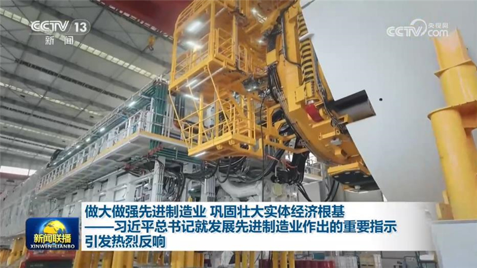
做大做强先进制造业 巩固壮大实体经济根基——习近平总书记就发展先进制造业作出的重要指示引发热烈反响
习近平总书记近日就发展先进制造业作出重要指示，强调持续做大做强先进制造业，为推进中国式现代化提供有力支撑。


习近平总书记近日就发展先进制造业作出重要指示，强调持续做大做强先进制造业，为推进中国式现代化提供有力支撑。
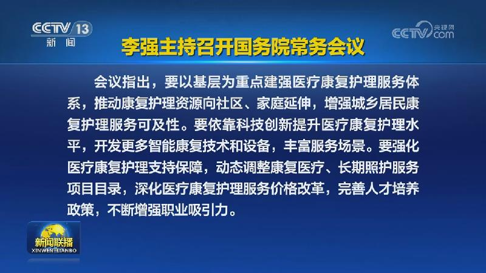
国务院总理李强9月18日主持召开国务院常务会议，听取老龄工作情况汇报，研究推动体育赛事健康发展有关工作，部署实施医疗康复护理扩容提升工程，审议通过《中医药传统知识保护条例（草案）》，讨论《〈中华人民共和国突发事件应对法〉等15部法律的修正案（草案）》。
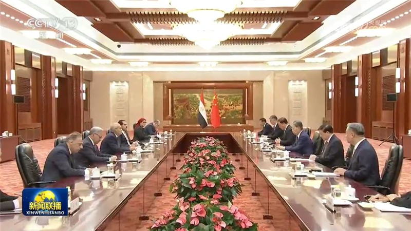
全国人大常委会委员长赵乐际18日在北京会见埃及参议长法里德。赵乐际表示，本月初习近平主席对埃及成功进行历史性访问，两国元首一致同意推进中埃命运共同体建设，为新形势下双边关系发展擘画了新蓝图。中方愿同埃方一道，落实两国元首达成的重要共识，赓续传统友谊，夯实政治互信，深化务实合作，共同开创中埃关系更加美好的未来。……
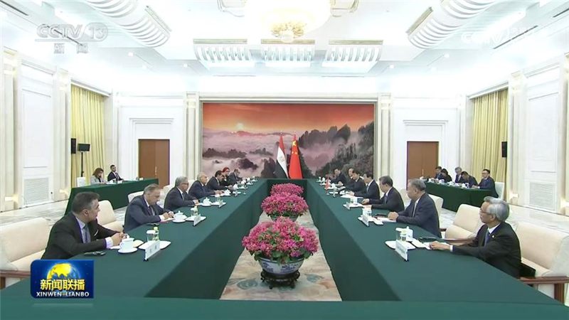
全国政协主席王沪宁18日在京会见埃及参议长法里德。王沪宁表示，前不久习近平主席对埃及成功进行历史性访问，两国元首达成广泛共识，为双边关系发展进一步指明方向。中方愿同埃方一道，全力落实好两国元首重要共识，赓续传统友谊，拓展互利合作，推进中埃命运共同体建设。中国全国政协愿进一步加强同埃方的交流交往，为推动中埃全面战略伙伴关系发展贡献力量。
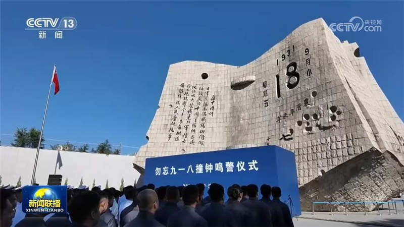
九一八事变发生95周年之际，勿忘九一八撞钟鸣警仪式18日上午在辽宁省沈阳市“九·一八”历史博物馆残历碑广场举行。中共中央政治局委员、全国人大常委会副委员长李鸿忠出席仪式并讲话。
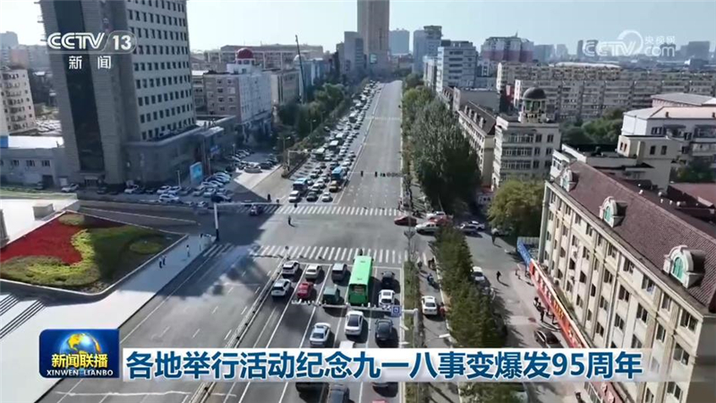
各地举行活动纪念九一八事变爆发95周年，铭记历史、珍爱和平，汲取前行力量。今天（9月18日）上午，防空警报响彻城市上空，机动车停驶鸣笛，港口船舶拉响汽笛，共同悼念为中华民族独立和人民解放而英勇献身的革命先烈，缅怀罹难同胞。
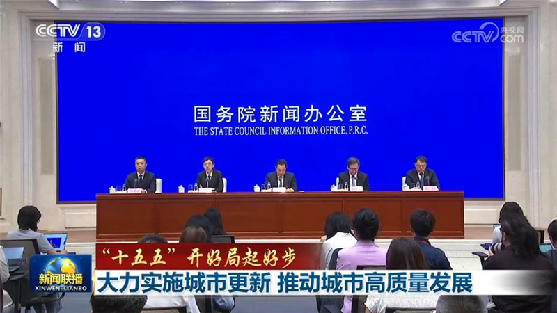
国务院新闻办公室今天（9月18日）举行“开局起步‘十五五’”系列主题新闻发布会，住房城乡建设部有关负责人介绍“十五五”时期推进住房城乡建设事业高质量发展有关情况。
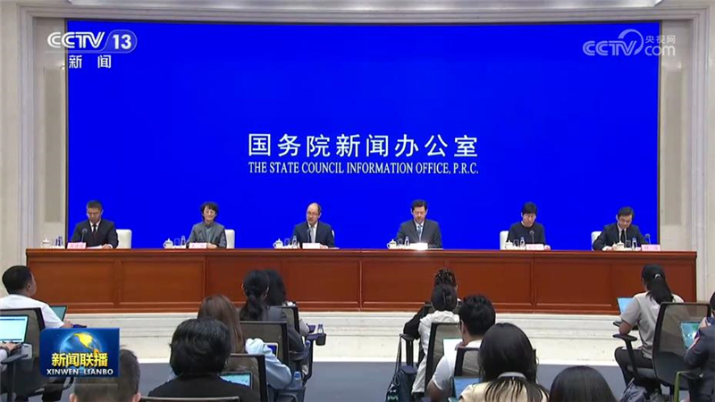
国务院新闻办公室今天（9月18日）举行新闻发布会，据商务部和广东有关负责人介绍，第140届广交会将于10月15日至11月4日分三期在广州举办。本届广交会3.2万家参展企业中，专精特新、单项冠军等优质企业超1.1万家。64%的参展企业应用工业互联网、人工智能等新技术。展出的新产品和绿色产品占比分别达到23.2%、26%。……
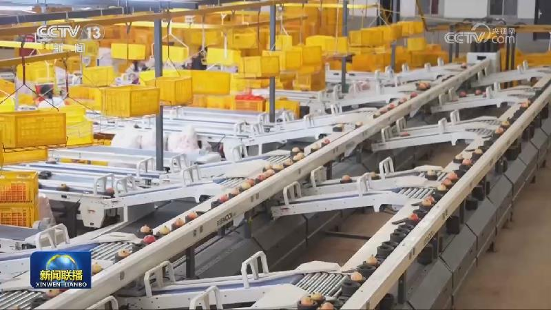
又是一年收获季，田间地头一派丰收景象。大江南北各具特色的农产品既富了农民腰包，也为乡村振兴持续注入发展动能。
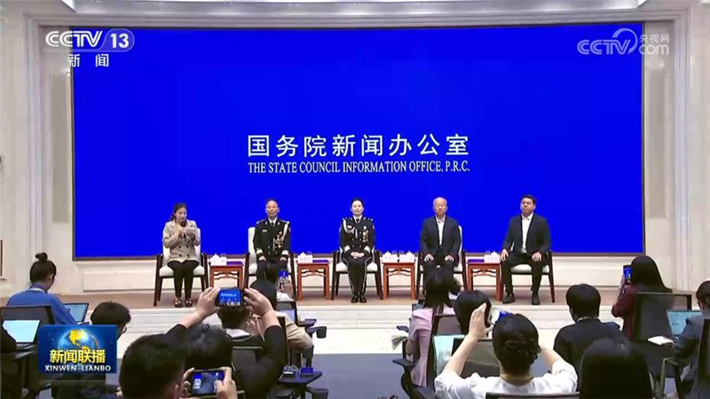
国务院新闻办公室今天（9月18日）举行“新征程上的奋斗者”中外记者见面会，4位退役军人事务领域代表围绕“永葆军人本色 退役再续荣光”与中外记者见面交流，分享各自在基层治理、移民管理、英烈褒扬、建设航天强国等领域扎根基层、实干担当的先进事迹，在“十五五”宏伟蓝图中勇毅前行、再续荣光的自觉追求，展现了新时代退役军人主动融入社会、不懈拼搏进取的昂扬风采和崭新面貌。
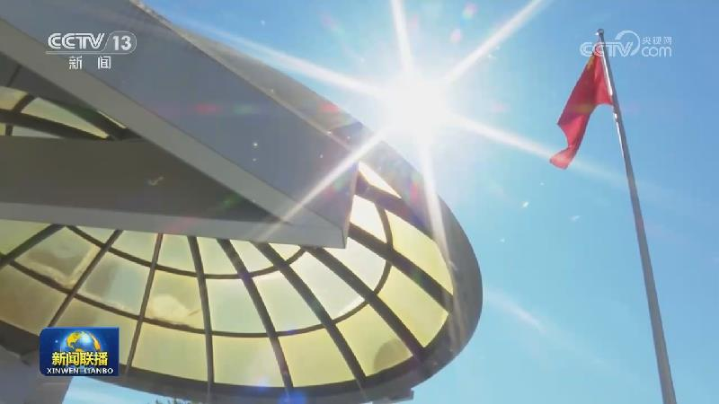
北京时间9月16日、18日，美国分两批次向我国返还64件（套）文物艺术品和古生物化石。
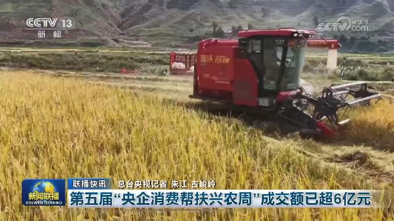
国务院食安办部署各地开展中秋、国庆期间食品安全检查
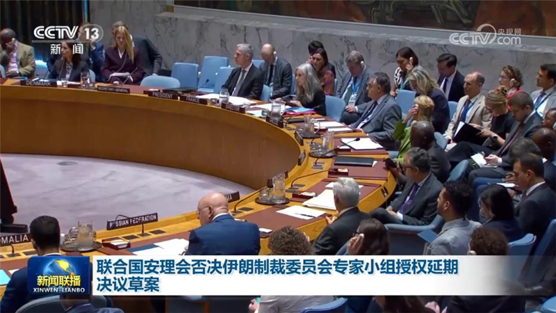
联合国安理会17日就伊朗制裁委员会专家小组授权延期决议草案进行投票，安理会常任理事国俄罗斯和中国投了反对票，决议草案被否决。中国代表在投票后发言表示，国际社会包括安理会的当务之急是推动当事方保持冷静克制，停止使用武力或以武力相威胁，缓和紧张局势，积极为当事方恢复落实停火、重返谈判、达成和平协议创造必要条件。……
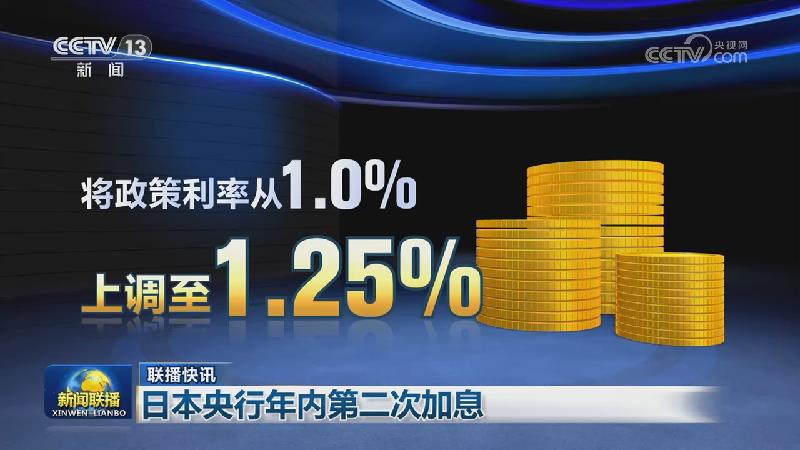
也门政府军与胡塞在曼德海峡附近激战